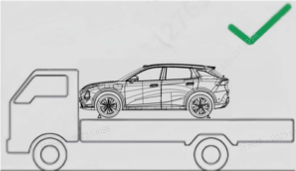

本章节车型图片仅为操作示意，请以实际车型为准。

将车辆设置为"P"挡，踩下制动踏板，在中控显示屏中点击“车辆中心→安全维护→特殊模式”虚拟按键，点击弹框内确认按钮后，车辆将进入拖车模式。
不要在后桥翘起的情况下拖车，否则转向系统会偏。不要在前轮着地的情况下朝后拖吊车辆，否则会损坏车辆。
拖车模式开启后车辆挡位将由P 挡变为N 挡，电子手刹将被释放，为防止车辆有溜坡，请在平坦无陡坡地面开启拖车模式。
拖车模式开启后车辆始终保持解锁状态，请退出拖车模式后进行车辆闭锁。
只能在硬面公路上进行短距离低速牵引，且需对车辆进行安全检查，确保动力系统、高压系统、车轮、车桥、传动系统、方向盘和制动器必须处于良好状态。
牵引车不得比被牵引汽车轻，否则车辆可能会失控。
检查并确定牵引用的钢索和链子、挂钩没有断裂或破损。
牵引用钢索或链子紧固在挂钩上。
不要猛拉挂钩，应施加稳定且均匀的力。
在牵引前，请确认被牵引车辆处于N 挡且处于可行驶状态，并打开危险警示灯。
牵引带长度应小于5 米（16 英尺），并系上醒目布带以便识别。
小心驾驶，避免牵引带在牵引中松弛。
两车驾驶员应频繁互通信息。
如果在长下坡行驶，制动器可能过热导致制动性能降低，应经常停车冷却制动器。
拖车距离不应超过25 km，拖车时的行驶速度不应超过40 km/h（25mph）。